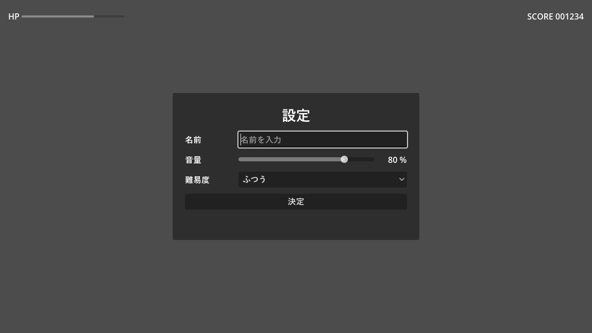

第 13 章 UI
本章では、ボタン、ラベル、スライダーなどの UI（ユーザーインターフェース）を作る方法を説明する。Godot の UI は Control を継承したノードで作る。エディター自体もこの仕組みで作られているので、ゲームのメニュー画面から道具アプリケーションまで、さまざまな画面を作れる。サンプルは chapter13 フォルダーにある。
Control ノード
UI の部品は Control を継承したノードである。Node2D の系統のノードが位置、回転、拡大率で配置されるのに対し、Control の系統のノードは「長方形の領域」を持ち、親の領域に対する相対的な位置と大きさで配置される。
ノード |
内容 |
|---|---|
|
文字列を表示する。 |
|
色や太字などの書式付きの文字列を、BBCode という記法で表示する。 |
|
押せるボタン。 |
|
オン・オフを切り替える。 |
|
ドロップダウンで項目を選ぶ。 |
|
1 行の文字列を入力する。 |
|
スライダーで数値を選ぶ。 |
|
進み具合や体力をバーで表示する。 |
|
画像を表示する。 |
|
単色の長方形を表示する。背景などに使う。 |
|
枠付きの背景を表示する。 |
レイアウト
Control の配置は、アンカー（anchor）とオフセット（offset）で決まる。
アンカー：親の領域のどこを基準にするか。0.0 が親の左端（上端）、1.0 が右端（下端）を表す。上下左右の 4 辺それぞれに設定する。
オフセット：アンカーの位置からのずれ（ピクセル）
例えば、アンカーを左右とも 1.0、上下とも 0.0 にすると、親の右上を基準に配置される。親（ウィンドウ）の大きさが変わっても、右上にくっついたままになる。
アンカーとオフセットを直接設定する代わりに、ビューポートのツールバーにある「アンカーのプリセット」から「左上」「中央」「Rect全面」などを選ぶのが簡単である。「Rect全面」（Full Rect）は親の領域いっぱいに広げる設定で、背景や画面全体の UI のルートによく使う。
コンテナー
UI の部品を 1 つずつ手で配置するのは大変で、画面の大きさが変わったときにも崩れやすい。そこで、子ノードを自動で並べるコンテナー（container）を使う。コンテナーの子になった Control は、位置と大きさをコンテナーが決める。
コンテナー |
子ノードの並べ方 |
|---|---|
|
縦、または横に 1 列に並べる。 |
|
指定した列数の格子状に並べる。 |
|
周囲に余白を付ける。 |
|
子を中央に配置する。 |
|
背景の枠を表示し、その中に子を配置する。 |
|
子が収まらない場合にスクロールできるようにする。 |
コンテナーの中で各部品がどれだけの幅を取るかは、部品のインスペクターの「Container Sizing」（size_flags_horizontal、size_flags_vertical）で決める。「塗りつぶし」（Fill）は割り当てられた幅いっぱいに広がる。「拡大」（Expand）を付けると、余った幅を取り合って広がる。例えば、HBoxContainer の中でラベルの幅は固定し、入力欄だけを残りの幅いっぱいに広げたい場合は、入力欄に「拡大」を付ける。
最小の大きさは custom_minimum_size で指定する。コンテナーは、子の最小の大きさより小さくはしない。
サンプル
ui_demo.tscn は、設定画面を模したサンプルである。画面上部に HP のバーとスコアを表示し、中央のパネルで名前、音量、難易度を入力して「決定」を押すと、入力内容が表示される。


図 25 ui_demo.tscn の実行結果
図 26 ui_demo.tscn のノードの構成（中央のパネル部分）
CenterContainer を画面全体に広げ、その中に PanelContainer を置くことで、パネルが常に画面の中央に表示される。パネルの中は VBoxContainer で縦に並べ、各行は HBoxContainer でラベルと入力欄を横に並べている。入力欄（NameEdit など）には「拡大」を付けて、残りの幅を使うようにしている。
画面上部の TopBar は HBoxContainer で、アンカーのプリセットを「上伸長」（Top Wide、上端に沿って左右いっぱいに広げる）にしている。HP のバーとスコアの間に、「拡大」を付けた空の Control を置くことで、スコアを右端に寄せている。
1extends Control
2## 設定画面風の UI。入力欄の値をまとめて、決定ボタンで表示する。
3
4@onready var _name_edit: LineEdit = %NameEdit
5@onready var _volume_slider: HSlider = %VolumeSlider
6@onready var _volume_label: Label = %VolumeLabel
7@onready var _difficulty: OptionButton = %DifficultyOption
8@onready var _result: Label = %ResultLabel
9
10
11func _ready() -> void:
12 for difficulty_name: String in ["かんたん", "ふつう", "むずかしい"]:
13 _difficulty.add_item(difficulty_name)
14 _difficulty.select(1)
15 _volume_slider.value_changed.connect(_on_volume_changed)
16 %ApplyButton.pressed.connect(_on_apply_pressed)
17 _on_volume_changed(_volume_slider.value)
18 _name_edit.grab_focus()
19
20
21func _on_volume_changed(value: float) -> void:
22 _volume_label.text = "%d %%" % value
23
24
25func _on_apply_pressed() -> void:
26 var player_name := _name_edit.text.strip_edges()
27 if player_name.is_empty():
28 player_name = "名無し"
29 _result.text = (
30 "名前: %s / 音量: %d %% / 難易度: %s"
31 % [player_name, _volume_slider.value, _difficulty.get_item_text(_difficulty.selected)]
32 )
%NameEdit などは、シーン固有名（第 5 章 ノードとシーン）で取得している。UI のシーンは階層が深くなりやすいので、シーン固有名を使うと、レイアウトを変えてもスクリプトを直さずに済む。
フォーカスとキーボード操作
ボタンなどの部品は、キーボードやゲームパッドでも操作できる。操作の対象になっている部品を「フォーカスがある」と言い、Tab キーや方向キーでフォーカスを移動し、Enter キーで押せる。この操作には ui_accept、ui_up などの組み込みのアクションが使われる。
ゲームパッドで遊ぶゲームでは、画面を開いたときに grab_focus() で最初の部品にフォーカスを当てておく必要がある。そうしないと、マウスを使わない限り操作を始められない。ui_demo.gd の 18 行目では、名前の入力欄にフォーカスを当てている。
マウスのクリックを通すかどうか
Control は、マウスのクリックを受け取ると、それより奥にある部品やゲームの世界にクリックを渡さない。そのため、画面全体を覆う半透明の ColorRect などを置くと、その下のボタンが押せなくなる。
この動作は「マウス」→「フィルター」（mouse_filter）で変更できる。
値 |
動作 |
|---|---|
Stop |
クリックを受け取り、奥には渡さない。ボタンなどの既定値 |
Pass |
クリックを受け取り、親にも渡す。 |
Ignore |
クリックを受け取らない。奥の部品にそのまま渡す。 |
背景や装飾だけの ColorRect や Label は、Ignore にしておくとよい。本書のサンプルでも、画面全体を覆う背景や画面効果の ColorRect は Ignore にしている。
テーマ
UI の色、フォント、余白などの見た目は、テーマ（Theme リソース）で決まる。個別の部品の見た目だけを変えるには、インスペクターの「テーマのオーバーライド」を使う。サンプルでは、タイトルの文字を大きくするために「テーマのオーバーライド」→「フォントサイズ」を設定している。
UI 全体の見た目をそろえたい場合は、Theme リソースを作って、UI のルートノードの「テーマ」（theme）に設定する。子ノードは親のテーマを引き継ぐ。プロジェクト全体の既定のテーマは、プロジェクト設定の「GUI」→「テーマ」で設定できる。
警告
Godot の既定のフォントには日本語の文字が含まれていない。Windows のエディターで日本語が表示されるのは、足りない文字を OS のフォントで補う機能（システムフォントのフォールバック）が働いているためである。Web 向けに書き出した場合など、OS のフォントを使えない環境では日本語が表示されないことがある。日本語を使うゲームを配布する場合は、日本語のフォントファイル（ライセンスを確認したもの）をプロジェクトに入れ、プロジェクト設定の「GUI」→「テーマ」→「カスタムフォント」に設定しておく。
画面の大きさへの対応
ゲームのウィンドウの大きさが変わったとき、画面の内容をどう表示するかは、プロジェクト設定の「表示」→「ウィンドウ」にある「ストレッチ」の「モード」（display/window/stretch/mode）で決める。
モード |
動作 |
|---|---|
disabled |
拡大縮小しない。ウィンドウを大きくすると、見える範囲が広がる。既定値 |
canvas_items |
基準の大きさ（既定では 1152 × 648）で作った画面を、ウィンドウの大きさに合わせて拡大縮小する。文字や図形は拡大後の解像度で描画されるので、くっきり表示される。 |
viewport |
基準の大きさで描画した結果の画像を拡大する。ドット絵のゲームで、ドットの大きさをそろえたい場合に使う。 |
本書のサンプルプロジェクトでは canvas_items にしている。縦横比が異なるウィンドウでの表示方法は、同じ場所の「アスペクト」で設定する。